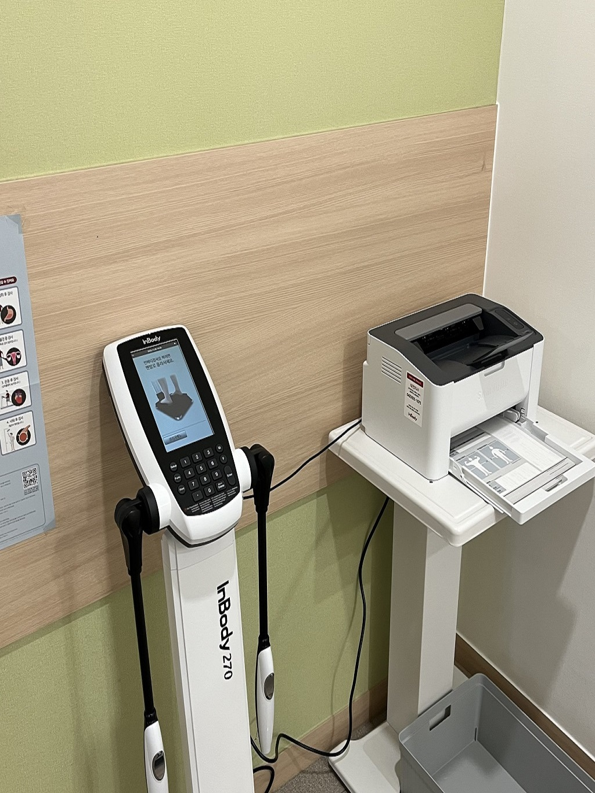
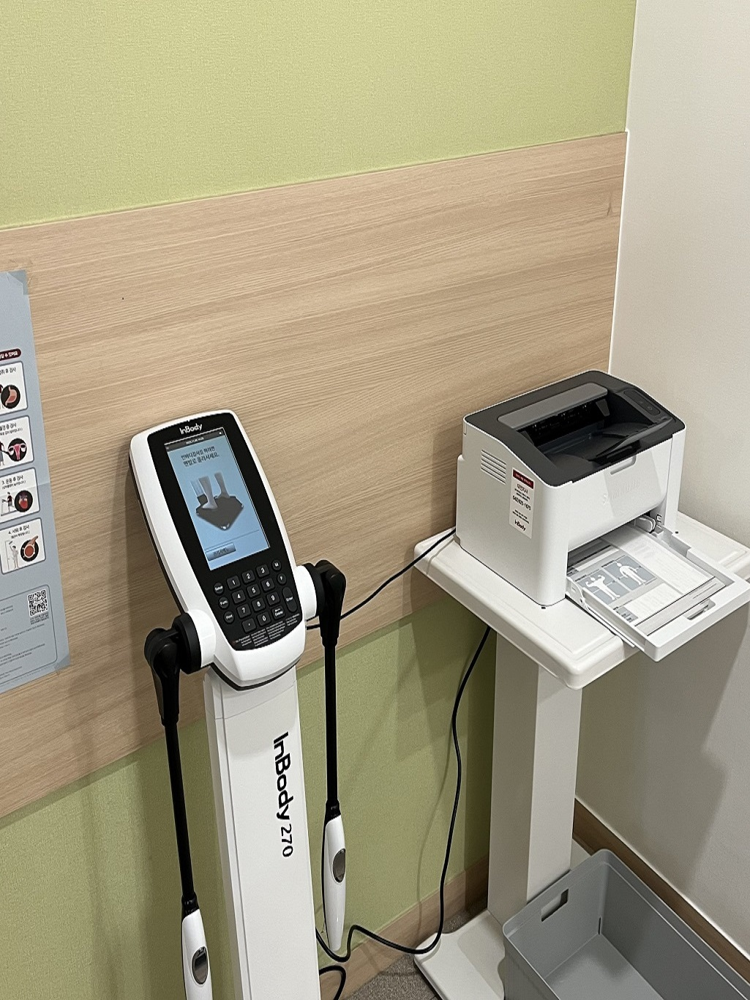

친절하고 꼼꼼하게 진료합니다.
진료 예약하기
환자 한 분 한 분의 통증과 일상을 이해하는 진료를 지향합니다.
편안한 공간에서 믿고 치료받을 수 있는 한의원이 되겠습니다.

온정 한의원 대표원장
차갑고 빨리 끝나버리는
진료가 아닌
따뜻한 말 한마디에서 시작되는
치료를 지향합니다.
근거 있는 한의학적 진료와 치료를
통해 아프지 않은 시간을 늘리고
일상이 편안해지는 것을 목표로 합니다.
언제나 환자의 입장에서 고민하며
과잉진료 없이
최선의 치료만을 제공합니다.
※ 항목을 클릭하시면 자세한 설명이 있는 블로그로 이동합니다


 


경기도 평택시 서재로 2
한주빌딩 2층
월–수, 금 09:30 – 19:00
토요일 09:30 – 13:00
목요일 · 일요일 · 공휴일 휴진
031-8029-9595